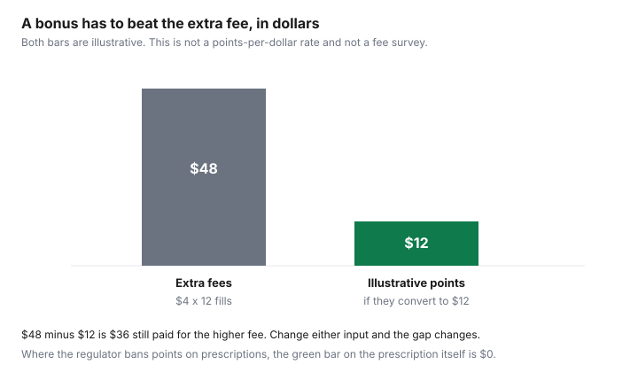

Healthcare · Canada
Pharmacy Loyalty and Prescriptions in Canada: Where You Can (and Can't) Earn Points on Rx
A loyalty offer at a drugstore is easy to see and hard to price. The points poster is at the counter. The dispensing fee is a line on the receipt. In several provinces the regulator has already decided that points on a prescription are not a retail promotion. This page is those rules, plus the arithmetic that still matters where a front-shop bonus is allowed: does the bonus beat a higher fee over a year? Redemption strategy for PC Optimum is on the PC Optimum guide and the bonus-event guide. This page does not restate earn rates for groceries. It is not pharmacy advice and not a ranking of banners.
Key takeaways
- Ontario, British Columbia, Alberta, and Quebec each have a regulator or ethics rule, opened for this draft, that restricts rewards on prescriptions or on medication purchases. Other provinces are marked "check your college." A 2022 New Brunswick FAQ is not used as a current map of the country.
- PC Optimum says points on prescriptions are not available in every province and tells you to ask the pharmacist. A profile-creation bonus is not the same as points on the drug.
- Over-the-counter products can still be eligible retail purchases. A prescription in the same bag does not change a provincial ban on the prescription itself.
- An illustrative extra fee of $4 a fill is $48 a year at twelve fills. An illustrative $12 points value does not cover it. Neither number is a program rate.
- No Scene+ earn rate on prescriptions was opened. Do not copy a grocery rate onto an Rx.
Why many provinces restrict loyalty points on prescriptions
Ontario's College of Pharmacists publishes a Loyalty Points Program Policy, dated July 2004, and the page carries a 2026 copyright line. It says bonus points, loyalty points, or air miles may not be awarded on prescriptions, prescription services, or other professional services. Points may not be redeemed as payment for prescriptions. A credit card that earns its own rewards is allowed, except where a special gift or bonus is offered for the prescription itself. Reimbursing parking, if it is not advertised, is not treated as a breach. The policy is about the profession in Ontario. It is not a Loblaw terms page.
The College of Pharmacists of British Columbia announced on 27 January 2016 that the Court of Appeal had upheld bylaws prohibiting incentives for prescriptions or pharmacy services. The college's registrar, in that news release, called redeemable points unethical, unsafe, and unprofessional, because a patient chasing points might fill a drug they should not. The release defines incentives to include redeemable points, cash, gifts, or other loyalty benefits on a prescription or another pharmacy service. This draft did not open a 2026 restatement of the bylaw. Treat the 2016 decision as the college's published position and confirm the current bylaw if a counter says the rule has changed.
Alberta's Standards of Practice for Pharmacists and Pharmacy Technicians say a regulated member must not offer an inducement on the condition that a patient obtains a drug product or a professional service. Inducement includes rewards, gifts, prizes, coupons, and loyalty points. The college's news of 22 September 2017 says the Court of Appeal allowed the college to enforce amendments first introduced in 2014. The standards also say a compassionate supply, or a product needed to augment therapy, is not prohibited. That exception is a professional judgment about care. It is not a loophole for a Tuesday points multiplier. Quebec's Code of ethics of pharmacists, section 98, says advertising of a discount, rebate, gift, trading stamp, bonus, or similar benefit on the purchase of a medication is prohibited. That is an advertising rule about medication, opened on the LégisQuébec text. It is not a sentence about toothpaste.
Where you can still earn: OTC medicines, health products and some co-pays
PC Optimum's help article, "How do I receive points for my prescription purchases?", says points cannot be awarded on prescriptions in all provinces. It tells you to check with a Loblaws or Shoppers Drug Mart pharmacist. Where the province allows it, you present your card when you pay. The PC Health page uses the same sentence and adds that collection of points on prescriptions is governed by provincial legislation, regulators, and third-party insurance, and is void where prohibited. Neither page prints a points-per-dollar rate for a prescription. This guide does not invent one.
A separate offer, on a PC Health page opened for this draft, advertised 3,000 points for creating a digital pharmacy profile for the first time before 31 December 2026 at 11:59 p.m. Eastern, for residents of listed provinces who had never created a profile, with points appearing four to six weeks later. The listed provinces included Ontario and British Columbia, where the colleges restrict points on prescriptions. Read that offer as a profile bonus, not as proof that a prescription earns points in those provinces. Offers change. Confirm the current terms before you open an account for the points.
Front-shop health products are the retail side. New Brunswick's college, in an FAQ dated 18 June 2022, draws a useful line even though this table does not treat that FAQ as the law of other provinces: an incentive tied to a drug dispensed under a prescription is not acceptable, and the same product self-selected without a prescription may be. A bottle of pain reliever you pick up without a prescription can be an eligible PC Optimum purchase under the program's retail terms. The prescription beside it follows the provincial rule. A co-pay is still a prescription purchase. If the province bans points on prescriptions, do not assume the co-pay portion earns points because you paid cash. Ask. The Scene+ guide is grocery redemption at banners that use that program. No Scene+ terms page opened here stated an earn rate on prescriptions, so none is printed.
Bonus events vs price: when points don't make up for a higher dispensing fee
A bonus weekend is a reason to look at the receipt, not a reason to move a prescription. The dispensing-fee guide is how to ask a pharmacy for the drug cost, the markup, and the fee. If one pharmacy's fee is an illustrative $4 higher and you fill twelve times a year, the extra fees are $48. If the points you actually receive convert to an illustrative $12 of groceries, you are still $36 behind, and you have tied the prescription to a store. Both dollars are illustrative. They are not a PC Optimum valuation and not a fee survey. Where points on the prescription are banned, put $0 in the points bar for the prescription itself. Front-shop points from the same trip can stay, if you were going to buy those items.
Fewer fills shrink the fee gap before points enter the picture. The longer-fills guide is that arithmetic. A pharmacy that will not do a 90-day fill, but will offer a large points multiplier on a monthly fill, is asking you to pay the fee more often. Price that first. Then look at whether the multiplier applies to the prescription in your province or only to the rest of the basket. The bonus-event guide is when to redeem points you already hold. It is not a reason to overpay a fee in order to earn more of them.
How drugstore programs compare on health purchases (rules, not rankings)
This is not a league table. PC Optimum is the program attached to Shoppers Drug Mart, Pharmaprix, and other Loblaw banners. The prescription rule is provincial, and the company's own page says so. Scene+ is a different program, used at banners covered in the grocery guide. No prescription earn rate for Scene+ was opened, so the comparison is "check the regulator, then check the terms," not a winner. A credit card that earns rewards on any purchase is the exception Ontario's policy already states, unless the offer is a special bonus for filling the prescription. Paying with a card you already use is not the same as a pharmacy points event.
Health purchases that are not prescriptions, such as a scheduled non-prescription product or a front-shop device, follow the college rule that applies to that product. Alberta's definition of inducement is aimed at a drug product or a professional service obtained on condition of the reward. A shopping bag of paper goods is outside that sentence. Keep the receipt split in your head: professional service on one line, retail on the other. If the terminal asks for a loyalty card once for the whole basket, ask the pharmacy what the prescription line earned.
Privacy: what linking your card to pharmacy purchases shares
The college policies opened here regulate inducements. They do not publish a data-sharing inventory for loyalty cards. The PC Health profile offer says you need prescriptions on file with that banner to create the profile, a unique email, and a PC id. That is a link between a loyalty identity and a pharmacy relationship. It is not a list of who else sees the drug name. Presenting a card at a till where points are allowed attaches that eligible purchase to the loyalty account. Read the program privacy policy, and ask the pharmacy which prompts are optional. Do not link a card because a poster says the points are large. This is not legal advice, and it is not a complete account of personal-information law.
A simple decision table
Use the province where the pharmacy is, not the province on your health card if you are travelling. A rule written for Ontario does not licence points in another province, and it does not erase them where no college ban was opened. The last column is the household test after the legal one: even a permitted point has to beat the fee.
| Province | Points on prescriptions | Source opened |
|---|---|---|
| Ontario | Not awarded on prescriptions, prescription services, or other professional pharmacy services. Not redeemed toward a prescription. | Ontario College of Pharmacists, Loyalty Points Program Policy, published July 2004. |
| British Columbia | College bylaws prohibiting incentives, including redeemable points, for prescriptions or pharmacy services, in force after the 27 January 2016 Court of Appeal decision reported by the college. | College of Pharmacists of British Columbia news release on that decision. Confirm the bylaw is unchanged. |
| Alberta | No inducement, including loyalty points, conditioned on obtaining a drug product or a professional service. Narrow exceptions for compassion and for products that augment therapy. | Alberta College of Pharmacy standards, standard 2.8, and the college news of 22 September 2017. |
| Quebec | Advertising a discount, rebate, gift, trading stamp, bonus, or similar benefit on the purchase of a medication is prohibited. | Code of ethics of pharmacists, section 98, LégisQuébec. |
| Other provinces and territories | Check your pharmacy regulator. | Not stated here. A second-hand list was not used as current law. |

Sources & date stamps
- Ontario College of Pharmacists, Loyalty Points Program Policy, published July 2004. Checked 27 Sep 2026.
- College of Pharmacists of British Columbia, news on the 27 January 2016 Court of Appeal decision upholding incentive bylaws. Checked 27 Sep 2026. No 2026 amendment page was opened.
- Alberta College of Pharmacy, Standards of Practice, inducement standard 2.8, and news dated 22 September 2017. Checked 27 Sep 2026.
- Code of ethics of pharmacists, CQLR chapter P-10, r. 7, section 98, LégisQuébec. Checked 27 Sep 2026.
- PC Optimum help article on points for prescription purchases, and the PC Health page stating points are void where prohibited. A profile offer with an end of 31 December 2026 was read as a profile bonus, not as an earn rate on prescriptions. No Scene+ prescription earn rate was opened.
- New Brunswick College of Pharmacists FAQ of 18 June 2022 was used only for the prescription-versus-self-selected line. It was not used to label other provinces.
Frequently asked questions
Can I earn PC Optimum points on prescriptions?
Not in every province. PC Optimum's own help page says points cannot be awarded on prescriptions in all provinces, and that you should ask the pharmacist whether your province allows it. Where points are allowed, you present your card when you pay. Ontario's College of Pharmacists says bonus points, loyalty points, or air miles may not be awarded on prescriptions or on professional pharmacy services. A front-shop purchase is a different transaction.
Why are points on prescriptions banned in some provinces?
The colleges that published rules say incentives can pull a decision away from care. B.C.'s college, in its news of the 27 January 2016 Court of Appeal decision, called redeemable points on prescriptions unethical and unsafe. Alberta's standards say a regulated member must not offer an inducement on the condition that a patient obtains a drug or a professional service. Ontario's policy, published in July 2004 and still on the college site, is the points ban. The concern they state is the prescription, not a bottle of shampoo.
Do OTC medicines earn points?
They can, where the product is a retail purchase and not a prescription. New Brunswick's college FAQ of 18 June 2022 says incentives are inappropriate when a product is dispensed under a prescription, and may be acceptable when the same kind of product is self-selected without a prescription. That is one college's line. PC Optimum points on eligible front-shop purchases are the program's retail rules. Read the offer. A prescription in the same bag does not make the toothpaste a prescription, and it does not make the prescription earn points in a province that bans them.
Is it worth switching pharmacies for points?
Only if the points, converted to something you will use, exceed the extra dispensing fees and any higher drug cost. An illustrative $4 extra fee, twelve times, is $48. An illustrative $12 of points does not cover it. No PC Optimum earn rate on prescriptions was copied into that comparison, because the help page does not print one. Where the regulator bans points on the prescription, the points value of the prescription itself is zero. The dispensing-fee guide is the price check. The PC Optimum guide is the redemption math.
What data do loyalty programs collect at the pharmacy?
The pages opened for this draft do not print a field-by-field list of what a pharmacy loyalty link shares. Creating a digital pharmacy profile, on the PC Health offer page, requires prescriptions on file with that banner. Presenting a card on an eligible purchase ties that purchase to the loyalty account. Read the program's privacy policy before you link a card, and ask the pharmacy what is optional. This is not legal advice.